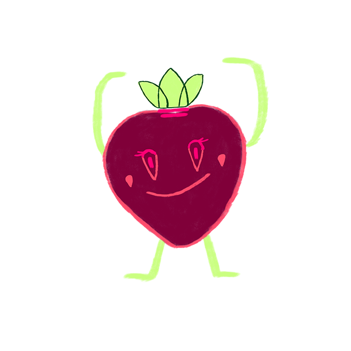

Place to Bio
Hoe start jij meer duurzaam te gaan eten?
Om te beginnen is het belangrijk om niet meer te eten dan je nodig hebt. Zorg daarom voor een goede balans op je bord. Hierdoor hoeft er minder voedsel geproduceerd te worden, wat beter is voor het milieu.
Op dit moment wordt voedsel namelijk zo snel mogelijk geproduceerd. Maar wat voor invloed heeft dat eigenlijk op de kwaliteit van ons eten en drinken?
start